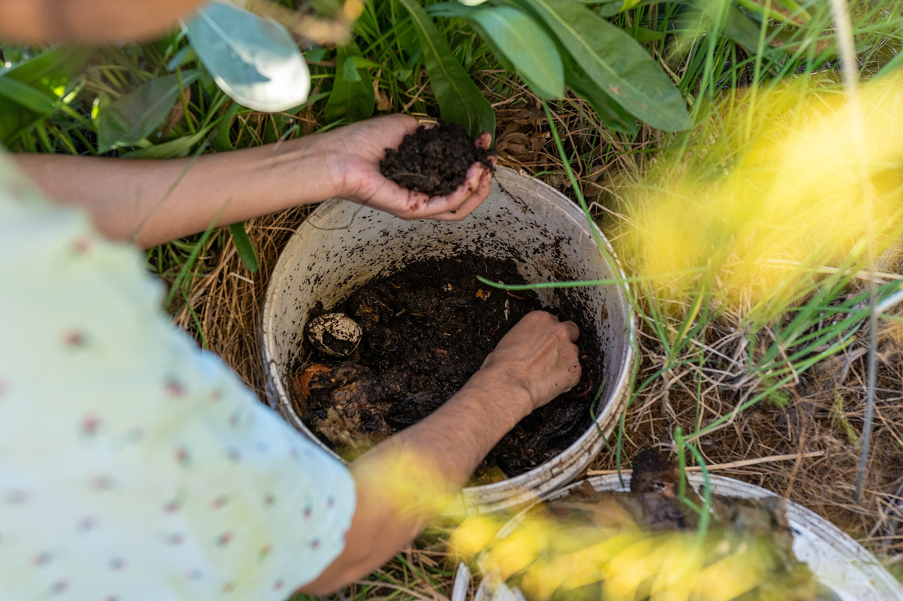

Beginner's Checklist
Your step-by-step guide to worm composting.
What is Vermicomposting?
Vermicomposting is a natural, eco-friendly process that harnesses the power of specialized composting worms — primarily Red Wigglers (Eisenia fetida) — to transform everyday food scraps and organic waste into one of the most nutrient-dense soil amendments available: worm castings. Unlike conventional hot composting, which requires outdoor space and careful balancing of carbon-to-nitrogen ratios, vermicomposting is a cool, aerobic process that thrives indoors year-round in a compact, odor-free bin. This makes it the perfect entry point for apartment dwellers, urban gardeners, classrooms, and anyone looking to reduce their ecological footprint without needing a backyard or expensive equipment.
When Red Wigglers consume kitchen scraps such as fruit and vegetable peelings, coffee grounds, tea leaves, crushed eggshells, and shredded newspaper, their specialized digestive systems — packed with billions of beneficial bacteria and enzymes — break down the material into castings that are far richer in plant-available nutrients than regular garden soil or traditional compost. These castings contain high concentrations of nitrogen, phosphorus, potassium, calcium, magnesium, and humic acids, all of which work synergistically to improve soil structure, increase water retention, and stimulate vigorous root growth. Research consistently shows that plants grown with worm castings produce larger yields, bloom more profusely, and exhibit stronger resistance to pests and diseases compared to those fed with synthetic fertilizers.
Beyond the garden, vermicomposting addresses a critical environmental challenge. Organic waste accounts for roughly 30 percent of landfill material, where it decomposes without oxygen and releases methane — a greenhouse gas more than 25 times as potent as carbon dioxide. By diverting your food scraps into a worm bin, you create a closed-loop system that produces free, renewable fertilizer while simultaneously reducing your household's contribution to climate change. Whether you are a seasoned gardener, a sustainability advocate, or a complete beginner, vermicomposting offers an accessible, rewarding way to turn waste into wealth and regenerate the health of your soil for years to come.
Why Start Vermicomposting?
- Zero Waste — Transform kitchen scraps, shredded paper, and other organic household waste into valuable worm castings instead of sending them to landfills, where they generate harmful methane emissions and contribute to environmental degradation.
- Supercharged Soil Health — Worm castings deliver a dense concentration of beneficial microbes, essential macro-nutrients, and humic compounds that revitalize depleted soil, improve drainage and aeration, and promote robust plant growth without synthetic chemicals or fertilizers.
- Perfect for Small Spaces — A well-maintained worm bin fits snugly under a kitchen sink, inside a pantry, or on a balcony. It produces no offensive odors when properly managed, requires just minutes of attention per week, and allows anyone — regardless of living situation — to participate in sustainable waste management and home food production.
Worms leave the bin when conditions are wrong. Check these common causes:
- Too wet — Add dry shredded newspaper or cardboard bedding and stop feeding for 3-5 days.
- Too acidic — Mix in a tablespoon of crushed eggshells or garden lime per gallon of bedding.
- Too hot or cold — Worms need 55-77°F (13-25°C). Move the bin to a more stable location if temperatures are outside this range.
- Overfed — Uneaten food creates heat and acids. Remove excess scraps, let the bin catch up on processing before adding more.
Fruit flies are the most common complaint in worm composting. Here is how to eliminate them:
- Bury food scraps deeper — Cover all food with at least two inches of damp bedding or newspaper.
- Freeze fruit before feeding — Freezing kills fly eggs on contact. Thaw slightly before burying in the bin.
- Add a paper barrier — Lay a damp sheet of newspaper across the top surface. Worms will burrow through it and flies cannot reach the food below.
- Vinegar trap — Place a small bowl of apple cider vinegar with a drop of dish soap near (not inside) the bin to attract and drown adult flies.
A healthy worm bin should smell earthy, like forest soil. Any sour or rotten odor means something is off:
- Sour smell — Too much nitrogen and not enough carbon. Add dry shredded paper or cardboard, mix thoroughly, and stop feeding for a few days.
- Ammonia smell — Overloaded with greens (grass clippings, fresh vegetable scraps). Reduce green inputs and add browns at a 3:1 ratio.
- Sulfur/rotten egg smell — Anaerobic conditions from overfeeding or excess moisture. Remove excess food, add dry bedding, and ensure air holes are not blocked.
Not all bugs are bad, but some indicate a problem:
- Ants — The bin is too dry. Mist the bedding lightly and add green materials. Ants also dislike disturbance, so turn the bin regularly.
- White mites/springtails — These are beneficial decomposers. Leave them alone; they help break down material.
- Brown mites — Indicate over-moisture or too much food. Let the bin dry slightly, reduce feeding, and add dry bedding.